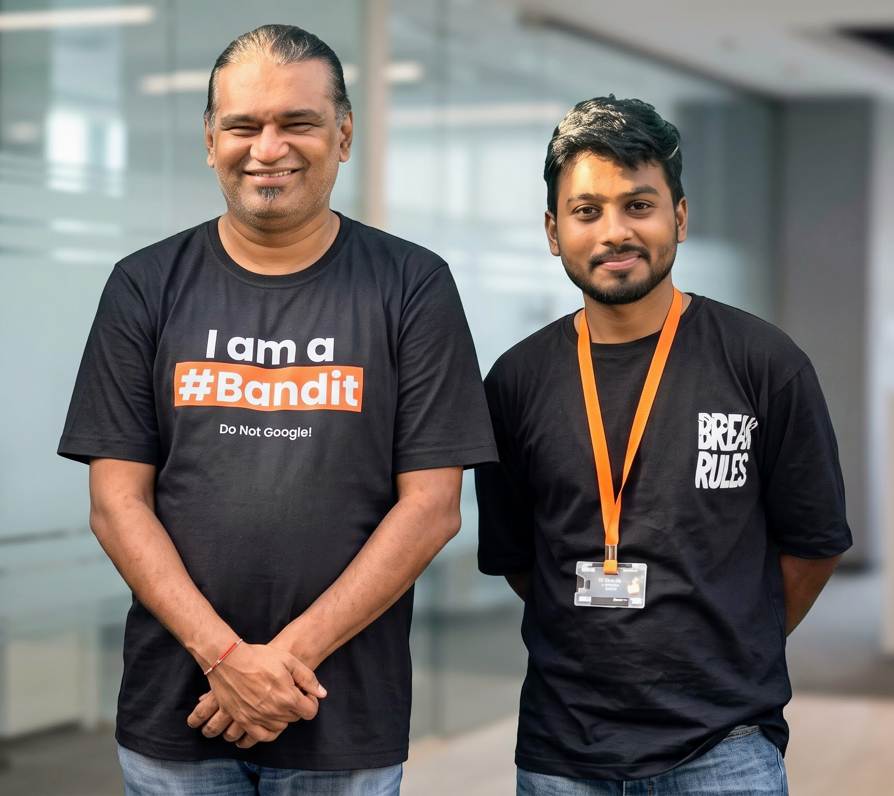

Before I automated anything, I spent a year hardening a real production network by hand. That's where everything below actually comes from.
That habit carried over into how I build pipelines now. A scanner isn't there to tick a box — it decides whether the deploy actually happens.

I've spent 12+ months working in infrastructure, network security, and SOC operations, and I just finished a PGCP-ITISS at C-DAC in Pune. Right now most of my time goes into building DevSecOps pipelines that actually get deployed — wiring up secret detection, SAST, container and DAST scanning, policy gates, and AI-assisted triage, then following it through to something running in the cloud instead of leaving it as a diagram.
Before that, I was the IT Executive responsible for hardening a real production network for over thirty people — segmentation, Wi-Fi security, patch management, least-privilege access, and the kind of backup strategy nobody appreciates until they need it. SecureFlow grew directly out of that year. I'd already seen what happens when security gets added to a pipeline after the fact, so I decided to build the gate myself instead.
My PGCP-ITISS mentor is Manu Zacharia. He founded c0c0n, India's international hacking and infosec conference, and built Matriux, one of Asia's first penetration-testing distributions. Before any of that he served in the Indian Air Force, and he's been in this field for over twenty years since. One habit of his stuck with me: think like the attacker first, then decide what to gate. It shows up in both SecureFlow and SentryVault.
IT Infrastructure, Systems & Security. Completed with 80% — DevOps, Cloud, and Kubernetes, alongside SOC operations and systems administration.
Administered access provisioning/de-provisioning and network connectivity; hardened Wi-Fi security and segmentation for 30+ users. Managed Digital Signature Certificates and e-tendering portal access (GeM/CPPP/state DISCOM) for authorized signatories during bid submissions. Enforced OS patch management, least-privilege access, and a security-aligned backup strategy. Delivered Tier-1/2 incident triage across internal staff.
Marwari College Ranchi, Ranchi University — 73.25%, First Division.
Doranda College Ranchi, Ranchi University — 78.9%, First Division.
Most teams treat security scanning as an afterthought in CI/CD, or cut it the moment it slows a release down. I built SecureFlow to gate it into the pipeline from day one, and ran it through more than 150 test pipeline executions to make sure it holds up under real use, not just in a demo.
Most security portfolios just show a scanner running. I wanted to show what it's actually defending, so this is a production-style, segmented multi-VM DMZ built to detect and react to a real attack — not describe one in a slide.
Built with Tanmaysune — a two-person security lab, not a solo project.
I rebuilt the classic CUPP tool from the ground up — no pip dependencies, a Markov n-gram model I trained myself, weighted leetspeak, keyboard-adjacency typo simulation. It refuses to run without an explicit --consent flag. That's not an oversight.
A heuristic engine running entirely client-side — Levenshtein typo-squat detection, locale-aware OCR — catches most phishing attempts in roughly no time at all. Only the genuinely ambiguous cases get escalated to Groq/Llama 3.3 70B, which is most of why the API bill stays down by up to 80%.
It checks RED symptoms before YELLOW or GREEN, on purpose — worst case first. GPS SOS goes out over plain SMS, there's a CPR metronome timed to WHO tempo, a 2G IVR simulator, seven languages, and — deliberately — zero backend, zero AI. Some problems don't need either.